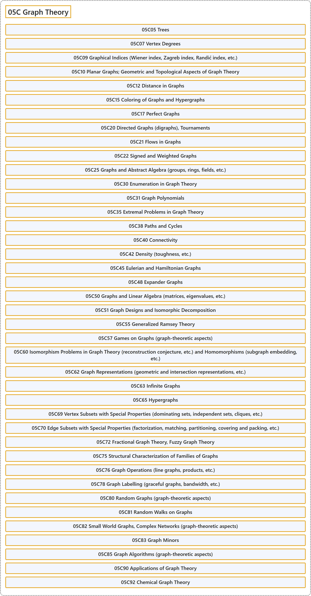

05C Graph Theory
Classification

Glossary
| Term | Definition | 中文翻译 | Source |
|---|---|---|---|
| 05C Graph Theory 图论 |
(No definition) | （无定义） | Associate Editors of Mathematical Reviews and zbMATH, 2020 |
| 05C05 Trees 树 |
(No definition) | （无定义） | Associate Editors of Mathematical Reviews and zbMATH, 2020 |
| 05C07 Vertex Degrees 顶点度 |
(No definition) | （无定义） | Associate Editors of Mathematical Reviews and zbMATH, 2020 |
| 05C09 Graphical Indices (Wiener index, Zagreb index, Randić index, etc.) 图指标（Wiener 指标、Zagreb 指标、Randić 指标等） |
(No definition) | （无定义） | Associate Editors of Mathematical Reviews and zbMATH, 2020 |
| 05C10 Planar Graphs; Geometric and Topological Aspects of Graph Theory 平面图；图论的几何与拓扑方面 |
(No definition) | （无定义） | Associate Editors of Mathematical Reviews and zbMATH, 2020 |
| 05C12 Distance in Graphs 图中的距离 |
(No definition) | （无定义） | Associate Editors of Mathematical Reviews and zbMATH, 2020 |
| 05C15 Coloring of Graphs and Hypergraphs 图与超图的着色 |
(No definition) | （无定义） | Associate Editors of Mathematical Reviews and zbMATH, 2020 |
| 05C17 Perfect Graphs 完美图 |
(No definition) | （无定义） | Associate Editors of Mathematical Reviews and zbMATH, 2020 |
| 05C20 Directed Graphs (digraphs), Tournaments 有向图、竞赛图 |
(No definition) | （无定义） | Associate Editors of Mathematical Reviews and zbMATH, 2020 |
| 05C21 Flows in Graphs 图中的流 |
(No definition) | （无定义） | Associate Editors of Mathematical Reviews and zbMATH, 2020 |
| 05C22 Signed and Weighted Graphs 符号图与加权图 |
(No definition) | （无定义） | Associate Editors of Mathematical Reviews and zbMATH, 2020 |
| 05C25 Graphs and Abstract Algebra (groups, rings, fields, etc.) 图与抽象代数（群、环、域等） |
(No definition) | （无定义） | Associate Editors of Mathematical Reviews and zbMATH, 2020 |
| 05C30 Enumeration in Graph Theory 图论中的计数 |
(No definition) | （无定义） | Associate Editors of Mathematical Reviews and zbMATH, 2020 |
| 05C31 Graph Polynomials 图多项式 |
(No definition) | （无定义） | Associate Editors of Mathematical Reviews and zbMATH, 2020 |
| 05C35 Extremal Problems in Graph Theory 图论中的极值问题 |
(No definition) | （无定义） | Associate Editors of Mathematical Reviews and zbMATH, 2020 |
| 05C38 Paths and Cycles 路与圈 |
(No definition) | （无定义） | Associate Editors of Mathematical Reviews and zbMATH, 2020 |
| 05C40 Connectivity 连通性 |
(No definition) | （无定义） | Associate Editors of Mathematical Reviews and zbMATH, 2020 |
| 05C42 Density (toughness, etc.) 密度（韧度等） |
(No definition) | （无定义） | Associate Editors of Mathematical Reviews and zbMATH, 2020 |
| 05C45 Eulerian and Hamiltonian Graphs 欧拉图与哈密顿图 |
(No definition) | （无定义） | Associate Editors of Mathematical Reviews and zbMATH, 2020 |
| 05C48 Expander Graphs 扩展图 |
(No definition) | （无定义） | Associate Editors of Mathematical Reviews and zbMATH, 2020 |
| 05C50 Graphs and Linear Algebra (matrices, eigenvalues, etc.) 图与线性代数（矩阵、特征值等） |
(No definition) | （无定义） | Associate Editors of Mathematical Reviews and zbMATH, 2020 |
| 05C51 Graph Designs and Isomorphic Decomposition 图设计与同构分解 |
(No definition) | （无定义） | Associate Editors of Mathematical Reviews and zbMATH, 2020 |
| 05C55 Generalized Ramsey Theory 广义拉姆齐理论 |
(No definition) | （无定义） | Associate Editors of Mathematical Reviews and zbMATH, 2020 |
| 05C57 Games on Graphs (graph-theoretic aspects) 图上的博弈（图论方面） |
(No definition) | （无定义） | Associate Editors of Mathematical Reviews and zbMATH, 2020 |
| 05C60 Isomorphism Problems in Graph Theory (reconstruction conjecture, etc.) and Homomorphisms (subgraph embedding, etc.) 图论中的同构问题（重构猜想等）与同态（子图嵌入等） |
(No definition) | （无定义） | Associate Editors of Mathematical Reviews and zbMATH, 2020 |
| 05C62 Graph Representations (geometric and intersection representations, etc.) 图的表示（几何表示与相交表示等） |
(No definition) | （无定义） | Associate Editors of Mathematical Reviews and zbMATH, 2020 |
| 05C63 Infinite Graphs 无限图 |
(No definition) | （无定义） | Associate Editors of Mathematical Reviews and zbMATH, 2020 |
| 05C65 Hypergraphs 超图 |
(No definition) | （无定义） | Associate Editors of Mathematical Reviews and zbMATH, 2020 |
| 05C69 Vertex Subsets with Special Properties (dominating sets, independent sets, cliques, etc.) 具特殊性质的顶点子集（支配集、独立集、团等） |
(No definition) | （无定义） | Associate Editors of Mathematical Reviews and zbMATH, 2020 |
| 05C70 Edge Subsets with Special Properties (factorization, matching, partitioning, covering and packing, etc.) 具特殊性质的边子集（因子分解、匹配、划分、覆盖与填充等） |
(No definition) | （无定义） | Associate Editors of Mathematical Reviews and zbMATH, 2020 |
| 05C72 Fractional Graph Theory, Fuzzy Graph Theory 分数图论、模糊图论 |
(No definition) | （无定义） | Associate Editors of Mathematical Reviews and zbMATH, 2020 |
| 05C75 Structural Characterization of Families of Graphs 图族的结构刻画 |
(No definition) | （无定义） | Associate Editors of Mathematical Reviews and zbMATH, 2020 |
| 05C76 Graph Operations (line graphs, products, etc.) 图运算（线图、积等） |
(No definition) | （无定义） | Associate Editors of Mathematical Reviews and zbMATH, 2020 |
| 05C78 Graph Labelling (graceful graphs, bandwidth, etc.) 图标号（优美图、带宽等） |
(No definition) | （无定义） | Associate Editors of Mathematical Reviews and zbMATH, 2020 |
| 05C80 Random Graphs (graph-theoretic aspects) 随机图（图论方面） |
(No definition) | （无定义） | Associate Editors of Mathematical Reviews and zbMATH, 2020 |
| 05C81 Random Walks on Graphs 图上的随机游动 |
(No definition) | （无定义） | Associate Editors of Mathematical Reviews and zbMATH, 2020 |
| 05C82 Small World Graphs, Complex Networks (graph-theoretic aspects) 小世界图、复杂网络（图论方面） |
(No definition) | （无定义） | Associate Editors of Mathematical Reviews and zbMATH, 2020 |
| 05C83 Graph Minors 图子式 |
(No definition) | （无定义） | Associate Editors of Mathematical Reviews and zbMATH, 2020 |
| 05C85 Graph Algorithms (graph-theoretic aspects) 图算法（图论方面） |
(No definition) | （无定义） | Associate Editors of Mathematical Reviews and zbMATH, 2020 |
| 05C90 Applications of Graph Theory 图论的应用 |
(No definition) | （无定义） | Associate Editors of Mathematical Reviews and zbMATH, 2020 |
| 05C92 Chemical Graph Theory 化学图论 |
(No definition) | （无定义） | Associate Editors of Mathematical Reviews and zbMATH, 2020 |
References
Associate Editors of Mathematical Reviews and zbMATH. (2020). MSC2020: Mathematics Subject Classification system. Retrieved October 27, 2026, from https://msc2020.org/